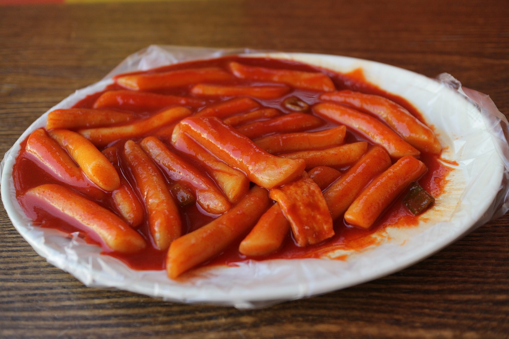

What is Tteokbokki?
Tteokbokki is a beloved Korean street food that combines chewy rice cakes (tteok) with a spicy sauce. The name itself is a combination of tteok meaning rice cake and bokki meaning stir-fried. Known for its spicy flavor and chewy texture, tteokbokki is a versatile dish that pairs well with a variety of side dishes. With countless recipes available, you can now find tteokbokki restaurants that cater to individual preferences.
source: https://www.kocis.go.kr/eng/webzine/201901/sub08.html
Ingredient
Main
- Tteokboki Rice cake
- Fish cake
- Green onion
- Onion
- Sesame seeds
Sauce
- Korean pepper paste
- Sugar
- Soy sauce
- Red pepper powder
- minced garlic
Preps
- Slice the onion and chop the green onion
- Separate the rice cakes and rinse them one by one under cold water
- Cut fish cake into bite-sized pieces
Cooking
- Boil the rice cakes in a pot of water
- Once the water boils, add the fish cakes and sauce, then stir
- Finish the dish by adding the remaining vegetables and cooking until everything is heated through
- Top with sesame seeds

.jpg)